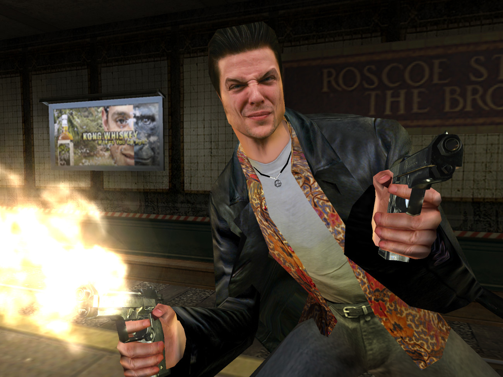
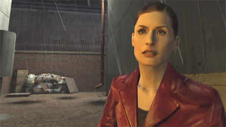
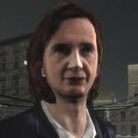
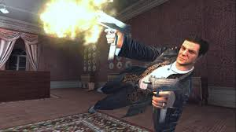
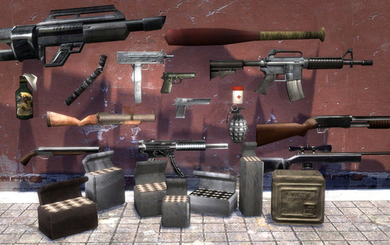
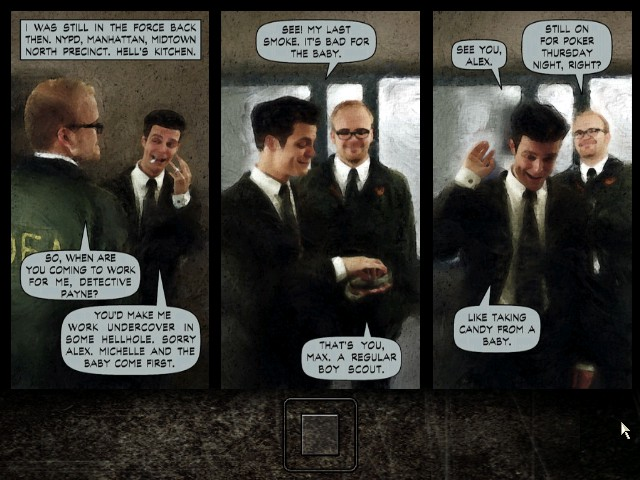
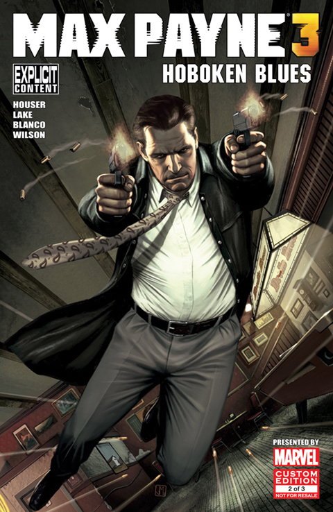
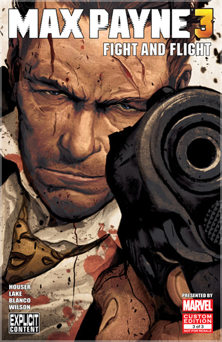
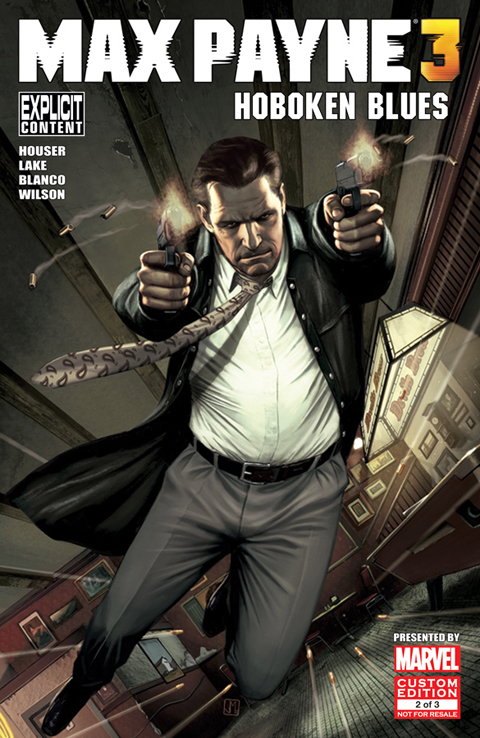
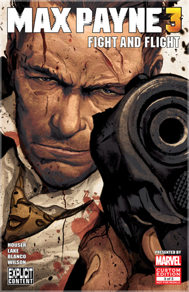

The story is told in medias res and consists of three volumes The American Dream, A Cold Day in Hell, and A Bit Closer to Heaven. The game begins in January 2001, as New York City finishes experiencing the worst blizzard in its history. The intro sequence shows Max Payne, a renegade DEA agent and former NYPD officer, standing at the top of a skyscraper building as police units arrive. He experiences a flashback from three years ago. Back in 1998, Max returned home in New Jersey to find that a trio of apparent junkies had broken into his house while high on a new designer drug called Valkyr. Max rushed to aid his family, but was too late, his wife and their newborn daughter had already been brutally murdered. After their funeral, Payne transferred to the DEA. Three years later, Max is employed as an undercover operative inside the Punchinello Mafia family responsible for the trafficking of Valkyr. His DEA colleague B.B. gives Max a message asking him to meet Alex Balder, his handler and best friend, in a subway station at Roscoe Street. Max's arrival at the subway results in a shoot-out after he encounters mobsters working for Jack Lupino, a Mafia underboss in the Punchinello crime family, attempting a bank robbery by breaking through from the station. Working his way back to the surface, Max encounters Alex, who is killed by an unknown assassin. Payne becomes the prime suspect in Alex's murder, because he is still undercover to the media and the fact that he fled the crime scene. Additionally, the Mafia find out that he is a cop and want him dead. While searching for Lupino in businesses owned by him, Max busts a Valkyr drug deal and discovers that the Russian mobster Vladimir Lem is engaged in a fierce turf war against Punchinello's men. While searching, Max gets a phone call from a man named Alfred Woden, stating that the police have been tipped off as to his location, and he escapes. As Max you have to uncover the drug trade for valkyr and kill the people who murdered your family all while there are police officers and mafia after you to kill you.
  
Max Payne is a third-person shooter, in which the player assumes the role of Max Payne. Initially, the player's only weapon is a Beretta. As they progress, players access other weapons including handguns, shotguns, sub-machine guns, long-range rifles, and hand-thrown weapons. To move the game along, the player is told what the next objective is through Max's internal monologue, in which Max iterates what his next steps should be. The prime emphasis of the series is on shooting. Almost all of the gameplay involves using Bullet Time to gun down foe after foe. Levels are generally straightforward, with almost no key-hunting. However, some levels do incorporate platforming elements and puzzle solving. Ammo is in virtually constant supply, as all enemies drop some ammo when killed.Bullet Time is a very large part of the Max Payne universe. When triggered, it slows down the action around the player to allow them to have quicker reflexes, and thus lets them kill enemies with ease. The player's movement is slowed, but they are still able to aim and react in real-time, providing a unique advantage over enemies.Max is able to perform a shootdodge manoeuvre, allowing him to leap into the air while still being able to fire his weapon. Shootdodge will end Bullet Time if it is used, unless you perform a Bullet Time Combo. The story of Max Payne is also presented in a unique way. Rather than CG cutscenes the developers chose to have a comic style of story telling. This was later adapted to create the Max Payne 3 comic series.
| Developer: | - Rockstar Vancouver (Now Rockstar Toronto) |
|---|---|
| Publisher: | - Rockstar Games - Bethesda Softworks |
| Release Date | - Oct 17, 2006 |
| Platforms | - Playstation 2,3,4 - Android - iOS - Xbox 360 - Windows - Nintendo Wii |
| Modes | - Single Player |
| Genre | - Third Person - Action Adventure |
| Rating | ESRB Teen |
  
A 3-part original Max Payne 3 Comic Book series created in partnership between Rockstar and Marvel Custom Solutions - released as digital comic books, limited print editions, and in a special hardcover graphic novel by Titan Books. Written by Dan Houser and Remedy's Sam Lake, this original Max Payne 3 Comic Book series will delve into Max's troubled past - exploring the events that occurred in and around both Max Payne and Max Payne 2, leading up to Max Payne 3 while also shedding new light on Max's early years. In order to understand the story of the comics you would have to play through both Max Payne 1 and Max Payne 2. Many plot holes that were in the first 2 games were explained or covered up in the comics. The plot of Issue #1 is as follows. A winter evening at Walton's Bar, Hoboken, New Jersey, between late 2011 and early 2012. Amidst the crowd of onlookers, Max Payne observes Anthony DeMarco's son strike a woman and threaten her with a gun. Payne impulsively grabs a pistol and puts it to the culprit's head. He then remembers his day and how he got to be at the bar.That morning, Max Payne wakes up from a nightmare in his apartment in Hoboken. For quite some time, he has been suffering from a possible post traumatic stress disorder and depression and can not forget the traumatic events of his past most prominently the abuse of his mother by his father and his infidelity he would witness growing up in the 70s until their early deaths, the murder of his wife and daughter in 1998, and Mona Sax and Valerie Winterson's deaths. Payne has become an alcoholic and a likely painkiller addict, spending most of his days idly sitting in front of a TV.This particular day, with Kong whiskey in hand, Max Payne decides to take a bus ride to the Golgotha Cemetery and visit Michelle and Rose's grave. There, he gets overcome with grief and he soon catches a bus back to the city where he decides to get drunk. He heads to Walton's Bar and thats where the issue ends. Max Payne is a very interesting character with a troubling past. If you are in any way interested in the character I highly recommend the comics.
 


